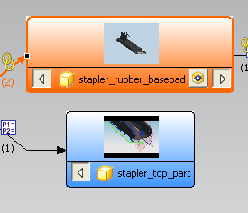
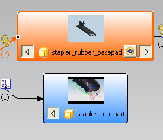

显示关系浏览器
-
确保您使用的是具有完整菜单的高级功能角色。
-
在装配工具条上，点击关系浏览器
 。
。NX 关系浏览器窗口出现(这可能需要花费较长时间) 。
关系浏览器提供一种分析部件与链接的特征之间相依性的方法。
-
找到当前高亮显示的工作部件。
您的窗口可能会有一些不同。

-
调整关系浏览器窗口的尺寸，以便您可以和本练习窗口一起看。
确保您使用的是具有完整菜单的高级功能角色。
在装配工具条上，点击关系浏览器  。
。
NX 关系浏览器窗口出现(这可能需要花费较长时间) 。
关系浏览器提供一种分析部件与链接的特征之间相依性的方法。
找到当前高亮显示的工作部件。
您的窗口可能会有一些不同。

调整关系浏览器窗口的尺寸，以便您可以和本练习窗口一起看。